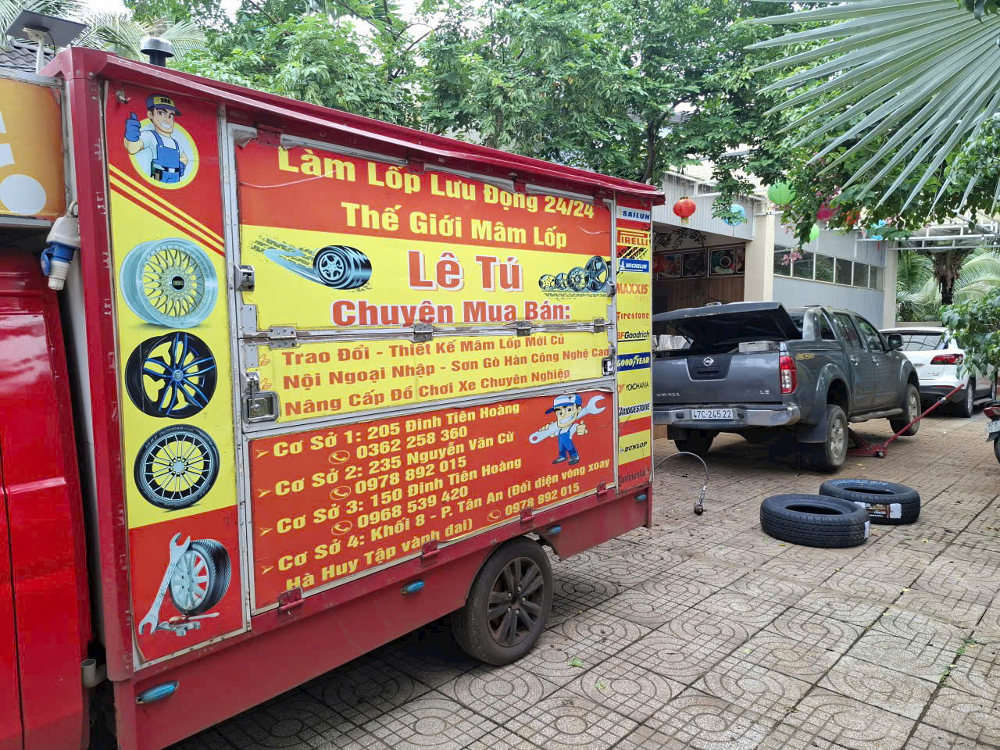
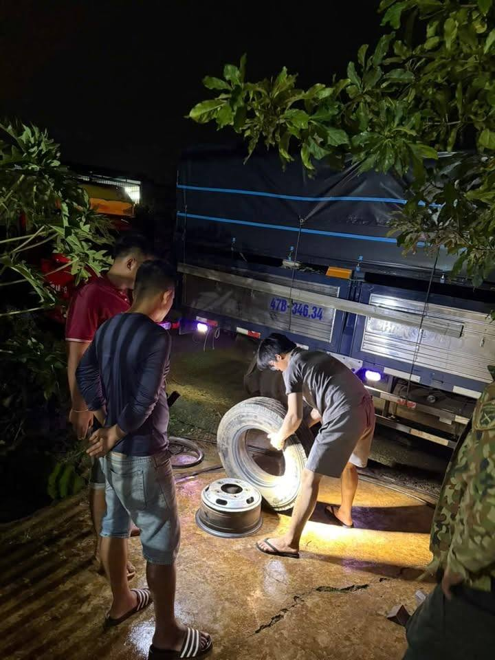
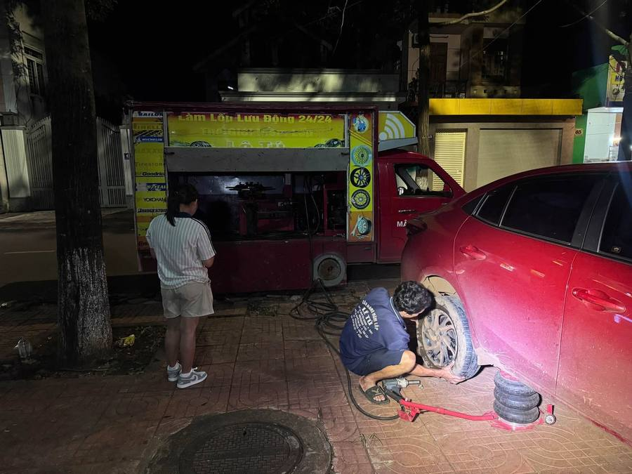
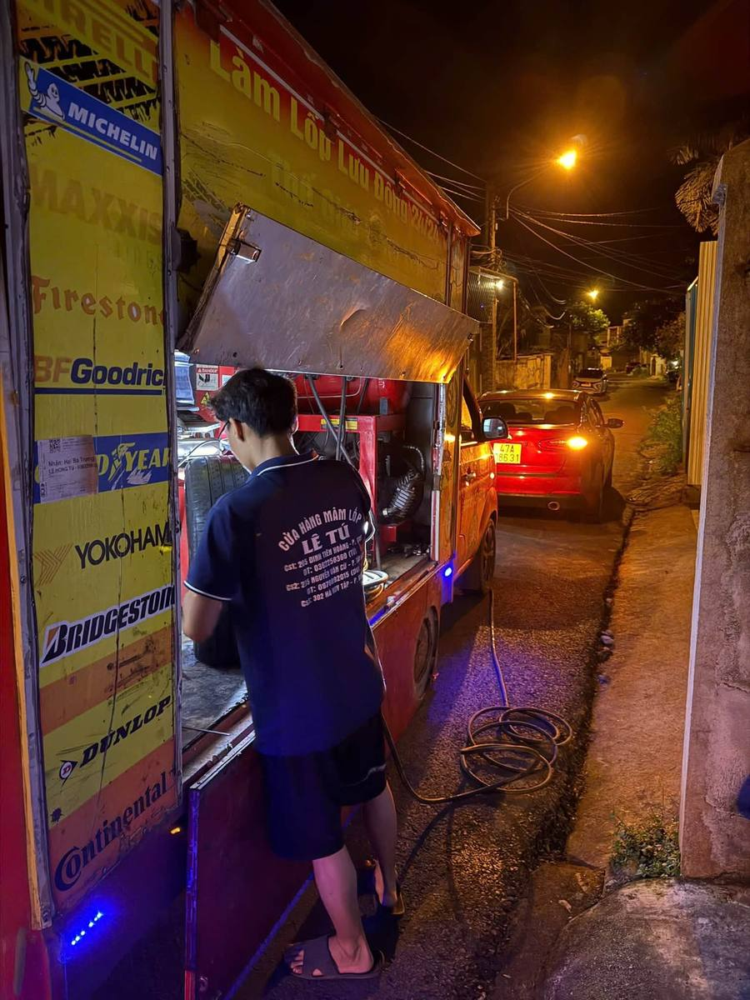
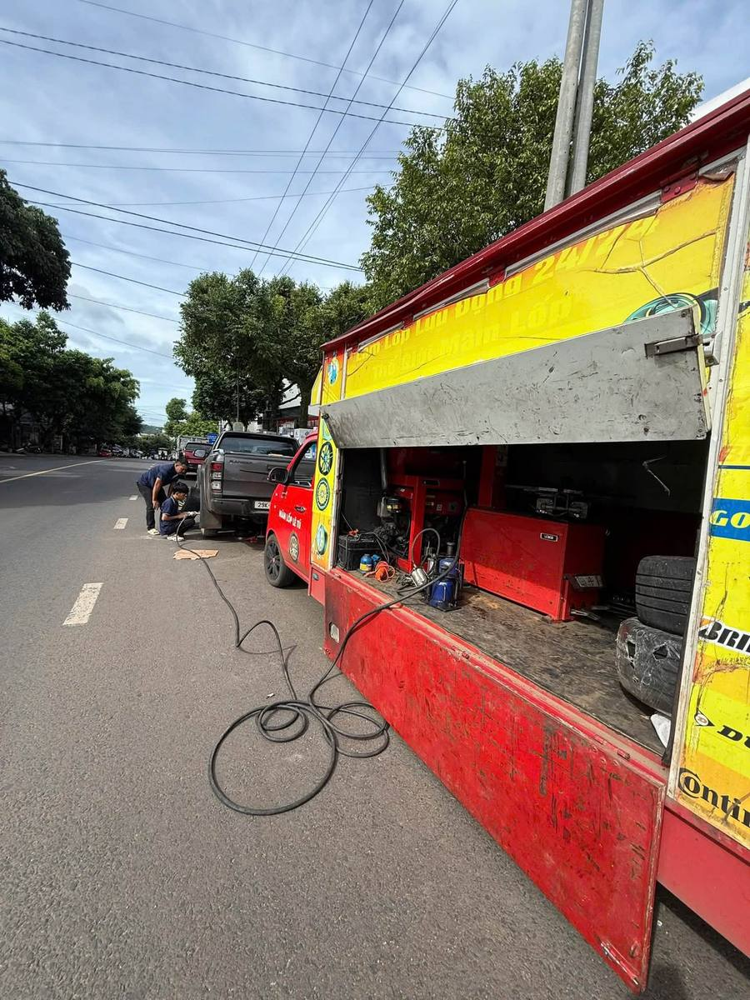

Đội xe lưu động chuyên đổi lốp, vá lốp, mua bán mâm lốp và cứu hộ ô tô, xe tải tại Buôn Ma Thuột & Đắk Lắk. Có mặt tận nơi, kể cả giữa đêm trên quốc lộ.

Từ một cuốc vá lốp giữa đường đến cứu hộ nguyên chiếc xe tải — xử lý gọn trong một cuộc gọi.
Vá lốp, thay lốp, cân bằng động, ra vào lốp tại chỗ — xe chuyên dụng đến tận nơi, không cần kéo về tiệm.
Phân phối các hãng lốp lớn: Michelin, Bridgestone, Continental, Goodyear, Yokohama, Dunlop và nhiều hãng khác.
Câu bình, tiếp nhiên liệu khẩn cấp, xử lý lỗi vặt khiến xe không nổ máy được giữa đường.
Kéo xe ô tô, xe tải hư máy, sa lầy hoặc va chạm về xưởng sửa hoặc nơi khách chỉ định, kể cả xe tải nặng.
Đội lưu động Lê Tú làm việc quanh Buôn Ma Thuột — kể cả giữa đêm, trên quốc lộ.




Có mặt tại nội thành Buôn Ma Thuột và các tuyến quốc lộ nối sang tỉnh bạn.
Ngoài 2 cơ sở trên bản đồ bên dưới, đội xe lưu động 24/24 vẫn có mặt tận nơi trên toàn TP. Buôn Ma Thuột và các huyện lân cận — chỉ cần gọi hotline.
Ba bước, không rườm rà — mục tiêu là đưa người và xe an toàn trong thời gian ngắn nhất.
Mô tả vị trí (cột km, biển báo gần nhất) và tình trạng xe/lốp. Càng cụ thể, đội tới càng nhanh.
Báo thời gian có mặt dự kiến và chi phí trước khi xuất phát, không để khách chờ trong mù mờ.
Ưu tiên vá/thay lốp, xử lý ngay tại hiện trường; trường hợp nặng hơn thì kéo về xưởng gần nhất.
Một vài phản hồi từ những chuyến lưu động gần đây quanh Buôn Ma Thuột.
Xe tải nổ lốp lúc nửa đêm trên quốc lộ, gọi là có người nhận máy ngay, đội tới xử lý gọn trong chưa đầy một tiếng.
Lốp thủng giữa đường trong thành phố, đội mang xe chuyên dụng tới vá tại chỗ, không mất công dắt xe đi đâu cả.
Đặt mua mâm mới qua Messenger, tư vấn rõ ràng, lắp tại chỗ luôn không phải chờ hẹn lại ngày khác.
Gọi thẳng hotline để được xử lý nhanh nhất, hoặc nhắn Messenger/email nếu đang ở nơi khó nghe máy.